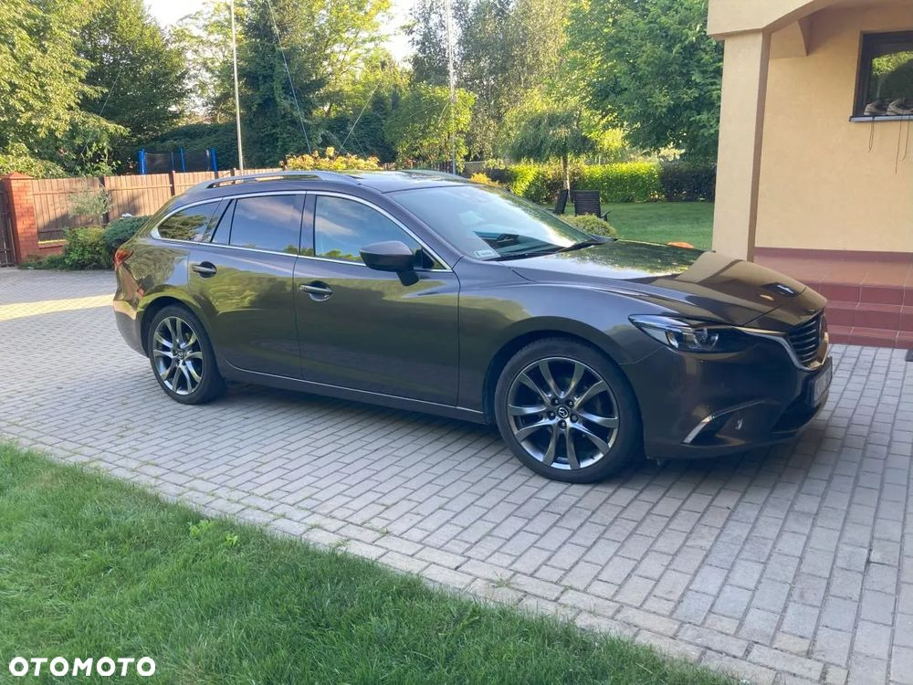

Mazda 6, najwyższa wersja SkyPassion z najmocniejszym wtedy benzynowym silnikiem o poj. 2,5 l (192 KM). Garażowany od nowości. Nagłośnienie Bose. Dodatkowo fabryczny szyberdach, Carplay (zainstalowany w ASO) i hak holowniczy wpinany Brink. Prawie nowy akumulator. Samochód serwisowany na bieżąco. Chyba do 2021 roku w ASO, potem w zaprzyjaźnionym warsztacie. Prawie nowe hamulce (klocki i tarcze), 2 miesiące temu wymieniony olej. Nie wymaga wkładu finansowego do bezpiecznej jazdy. Poniżej informacje przepisane ze specyfikacji:
Skrzynia: 6 AT
Nadwozie: 5drzwi
Wyposażenie: SkyPASSION
Napęd: przód
Tapicerka: Tapicerka skórzana, czarna
Lakier: Titanium Flash (42S)
BEZPIECZEŃSTWO: Układ zapobiegający blokowaniu kół w trakcie hamowania (ABS) z układem elektronicznego rozdziału
siły hamowania (EBD) oraz układem awaryjnego hamowania (EBA)
Układ dynamicznej stabilizacji toru jazdy (DSC) z elektronicznym układem kontroli trakcji (TCS)
Przednie i boczne poduszki powietrzne, kurtyny powietrzne
Elektromechaniczny hamulec postojowy
TPMS - system monitorowania ciśnienia w ogumieniu
HLA - układ wspomagający ruszanie na wzniesieniu
SCBS - system wspomagający hamowanie (zapobiegający kolizjom przy małej prędkości)
SCBS - system wspomagający hamowanie podczas cofania (zapobiegający kolizjom przy małej prędkości)
RVM - system monitorowania tyłu pojazdu (ostrzegający o pojazdach w martwym polu)
RCTA - system monitorujący ruch poprzeczny przy cofaniu
Przednie reflektory diodowe (LED) z systemem doświetlania zakrętów (AFLS)
Diodowe światła do jazdy dziennej (LED) Światła przeciwmgielne diodowe (LED) Tylne światła diodowe (LED)
AHBC - system inteligentnych świateł drogowych o selektywnym obszarze oświetlania
LKA - system wspomagający utrzymanie pojazdu w pasie ruchu
Driver Alert - system wykrywający znużenie kierowcy
SBS - inteligentne wspomaganie hamowania (2)
Wyświetlacz Head-up
Zestaw naprawczy opony z kompresorem 12V
Alarm przeciwwłamaniowy
KOMFORT:
System i-stop (automatycznie wyłączający silnik na postoju)
Elektrycznie sterowane szyby przednie i tylne
Światła przednie z funkcją Leaving/Coming Home (oświetlania drogi do domu)
Komputer pokładowy
Elektrycznie sterowane i podgrzewane lusterka boczne
Elektrycznie składane lusterka boczne
Audio AM/FM RDS CD/MP3 11 głośników Radio cyfrowe (DAB) Wejście AUX oraz 2 porty USB
Wyświetlacz centralny 7" ze sterowaniem dotykowym (dostępnym w trakcie postoju)
Multimedialny system rozrywki i łączności
Ergonomiczny system sterowania HMI (pokrętło wielofunkcyjne)
Przestrzenny system nagłośnieniowy Bose®
Kamera cofania (zintegrowana z wyświetlaczem centralnym)
Elektrochromatyczne lusterko wsteczne
Klimatyzacja automatyczna, dwustrefowa z nawiewem na tylny rząd siedzień
Zestaw głośnomówiący Bluetooth®
System nawigacji Mazda
Adaptacyjny układ utrzymywania stałej prędkości (aktywny tempomat - MRCC)
Czujnik deszczu i zmierzchu (inteligentne wycieraczki i automatyczne światła mijania)
Podgrzewane fotele przednie
Regulacja elektryczna wysokości foteli kierowcy i pasażera /regulacja podparcia lędźwiowego fotela kierowcy
Podgrzewane siedzisko tylnej kanapy
Elektryczna regulacja foteli kierowcy i pasażera z przodu z funkcją pamięci dla fotela kierowcy
Czujniki parkowania przednie i tylne
Zdalnie sterowany centralny zamek (za pomocą przycisków na pilocie)
Zaawansowany system dostępu bez kluczyka (otwieranie/zamykanie za pomocą przycisku na klamce)
Łopatki do zmiany biegów przy kierownicy
WNĘTRZE:
Przycisk do uruchamiania silnika
Skórzana kierownica i gałka dźwigni automatycznej skrzyni biegów
Tapicerka skórzana w kolorze czarnym
Lusterka w osłonach przeciwsłonecznych z podświetleniem
Podświetlany schowek przed fotelem pasażera
Podłokietnik ze schowkiem w pierwszym rzędzie siedzeń
Dzielone i składane oparcie tylnej kanapy w proporcji 60:40
Rozkładany podłokietnik tylnej kanapy z uchwytami na napoje
Roleta bagażnika Karakuri (podnosząca i opuszczająca się wraz z tylną klapą)
System składania tylnej kanapy Karakuri
WYGLĄD ZEWNĘTRZNY:
Kierunkowskazy wbudowane w lusterka boczne
Relingi dachowe
Spoiler dachowy
Antena dachowa w kształcie płetwy rekina
Przyciemniane tylne szyby
Pakiet stylistyczny Premium (przedni grill i zderzak, tylne światła)
Koła 225/45R19 na felgach aluminiowych w kolorze Satin Chrome
Akcesoria:
Dywaniki gumowe, listwa ochronna tylnego zderzaka - Sport Kombi
Listwy ozdobne progów z podświetleniem
Mata ochronna bagażnika - Sport Kombi
Szyberdach regulowany elektrycznie
Samochód miał kilka lat temu delikatne spotkanie z sarną, wymieniono w ASO plastiki (zderzak), mogę podesłać zdjęcia. Na prawie nowy spadła gałąź i uszkodziła maskę, była wymieniona w ASO. Ma kilka drobnych zadrapań, jak to 10-latek. Nie mam zamiaru niczego ukrywać, na koszt kupującego możemy podjechać do dowolnej stacji diagnostycznej / warsztatu, byle w rozsądnej odległości :) Nie spieszę się ze sprzedażą, proszę tylko o poważne oferty. W tej cenie dodatkowo dodam zimowe koła na alufelgach Mazdy i belki bagażnika Thule do relingów. Sprzedaję samochód, bo kupiłem nowy.
